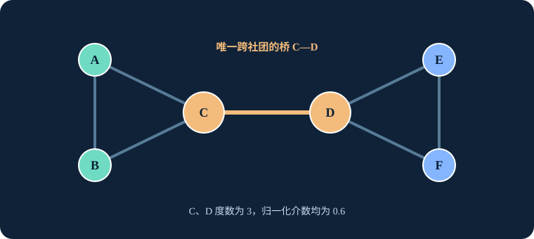

CENTRALITY / LOCAL DEGREE, PATH BRIDGES, NEIGHBOR STATUS
第8章 中心性分析
连接最多的人，未必是最关键的桥梁。
节点“重要”到底指什么？
一个节点可能认识很多邻居，却很少承担跨群体通信；另一个节点连接不多，但恰好占据两群体之间的短路径。研究网络中心性时，必须先定义任务：寻找大流量节点、最短路径的桥梁，还是与高影响邻居相连的节点？三种任务不必有相同的答案。

度中心性：先看直接连接多少人
这里 n 是节点数，d(v) 是节点 v 的度数。例图中 n=6，C 和 D 的度数为 3，归一化度中心性都是 3/5=0.6；其他四个节点度数为 2，归一化值为 0.4。对于有向图必须分别考虑入度和出度，不能混用这一无向定义。
介数中心性：谁站在最短路径中间？
对于不同节点 s、t，记 σ_st 为它们之间的最短路径条数；σ_st(v) 是其中穿过 v、但不以 v 为起终点的路径数。把这些比例对所有无序节点对求和，得到无向图未归一化的介数：
本例从左侧两个非桥节点（A、B）到右侧三个节点（D、E、F）的 2×3=6 对最短路径都会经过 C，因此 C 的未归一化介数为 6。对 n=6，无向图非端点归一化的分母为 (n−1)(n−2)/2=10，结果 0.6；D 对称。其他四个节点介数为 0。
路径有多条时按份额分摊，而不是一律加 1。权重参与最短路径运算时，通常被解释为距离或成本，不是“越大越近”的联系强度。零权重可能导致等长路径计数问题，应另行约束。
让同一张图回答三个不同的问题
切换“重要性”的定义
度中心性：C、D 各为 3/5=0.6。它只衡量直接连接数量。
这组结构刻意让 C、D 同时具备较高的度和介数；这不证明两种指标相同。给左社团新增一个拥有大量局部邻居的枢纽后，它的度可能更高，但跨群体桥的介数仍可能最大。应在任务和图类型确定后分别计算排名。
特征向量中心性：邻居是谁也重要
特征向量中心性让一个节点从其高中心性邻居处获得更多贡献，可以写成 A x = λ x（A 是邻接矩阵，x 为评分向量）。在连通、非负的无向图中，Perron–Frobenius 理论支撑主特征向量的非负解释。但断开图和某些有向图可能出现非唯一、不可收敛或解释不直观的情况，需要检查算法实现与收敛状态。
介数不等于实际承载流量。现实路径可能绕过最短路，传播有时间、方向、容量和行为偏好；模型计算值并不会自动成为因果影响力。
用 NetworkX 计算并验证桥梁节点
运行环境：Python 3.11+、NetworkX 3.3+。测试验证明确的图和归一化口径。
import networkx as nx
graph = nx.Graph([(0, 1), (1, 2), (2, 0),
(2, 3), (3, 4), (4, 5), (5, 3)])
degree = nx.degree_centrality(graph)
between = nx.betweenness_centrality(graph, normalized=True, endpoints=False)
eigen = nx.eigenvector_centrality(graph, max_iter=1000)
assert degree[2] == 0.6 and degree[3] == 0.6
assert abs(between[2] - 0.6) < 1e-12
assert abs(between[3] - 0.6) < 1e-12
assert all(abs(between[v]) < 1e-12 for v in (0, 1, 4, 5))
print("degree:", degree)
print("betweenness:", between)
print("eigenvector:", eigen)跨模型比较时应固定加权/无权、有向/无向、是否包含端点、路径的不可达处理与归一化规则，否则分数并不可直接比较。
原始资料与技术参考
- Freeman (1977), A Set of Measures of Centrality Based on Betweenness。
- Brandes (2001), A Faster Algorithm for Betweenness Centrality。
- NetworkX betweenness_centrality 与 eigenvector_centrality。
下一章把“邻居的权威贡献”放入有向链接网络，借助随机游走定义 PageRank。